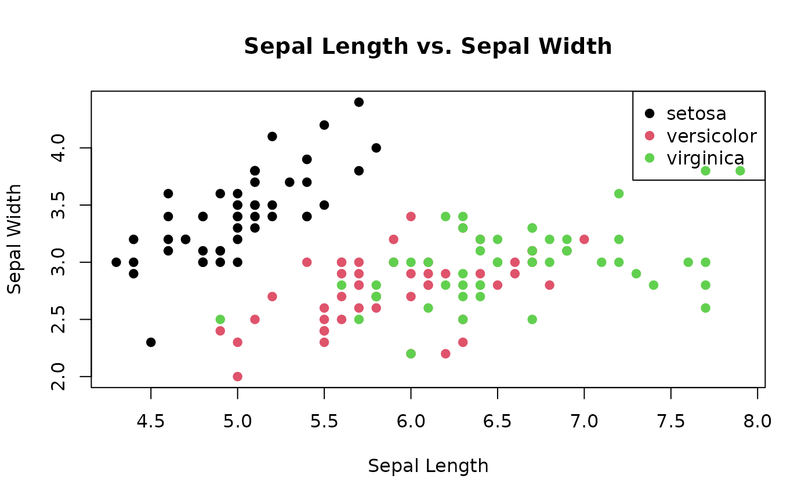
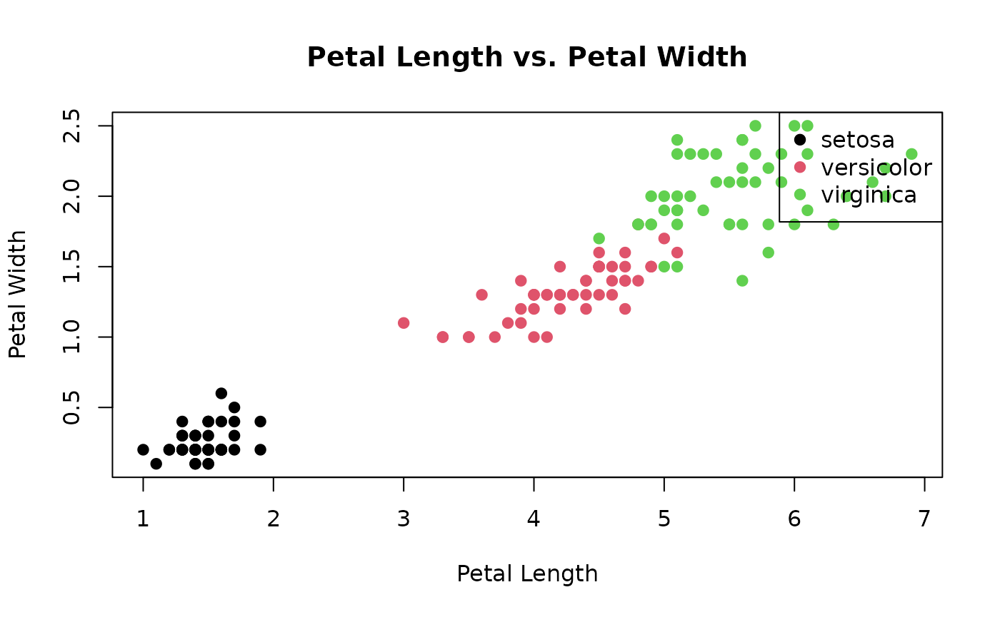

Using FuzzyClass: Solving a Classification Problem
Jodavid Ferreira
2023-08-21
Source:vignettes/index.Rmd
index.RmdIn this vignette, we will explore how to utilize the
FuzzyClass package to solve a classification problem. The
problem at hand involves classifying different types of iris flowers
based on their petal and sepal characteristics. The iris
dataset, commonly available in R, will be used for this purpose.
Exploratory Data Analysis of the Iris Dataset
In this vignette, we will perform an exploratory data analysis (EDA)
of the classic iris dataset. This dataset consists of
measurements of sepal length, sepal width, petal length, and petal width
for three species of iris flowers. We will use various visualizations
and summary statistics to gain insights into the data.
Loading the Data
Let’s start by loading the iris dataset and examining
its structure:
# Load the iris dataset
data(iris)
# Display the structure of the dataset
str(iris)
#> 'data.frame': 150 obs. of 5 variables:
#> $ Sepal.Length: num 5.1 4.9 4.7 4.6 5 5.4 4.6 5 4.4 4.9 ...
#> $ Sepal.Width : num 3.5 3 3.2 3.1 3.6 3.9 3.4 3.4 2.9 3.1 ...
#> $ Petal.Length: num 1.4 1.4 1.3 1.5 1.4 1.7 1.4 1.5 1.4 1.5 ...
#> $ Petal.Width : num 0.2 0.2 0.2 0.2 0.2 0.4 0.3 0.2 0.2 0.1 ...
#> $ Species : Factor w/ 3 levels "setosa","versicolor",..: 1 1 1 1 1 1 1 1 1 1 ...The output provides a summary of the dataset’s structure:
- The dataset is a data.frame with 150 observations (rows) and 5 variables (columns).
- Each variable is listed with its name and data type (num for numeric and Factor for categorical).
- For numeric variables (Sepal.Length, Sepal.Width, Petal.Length, Petal.Width), summary statistics like the mean, median, and quartiles might be shown.
- The Species variable is a categorical factor with 3 levels: “setosa”, “versicolor”, and “virginica”.
- This summary gives an overview of the dataset’s dimensions, variable types, and some basic statistics, helping users understand the dataset’s content before diving into further analysis.
Summary Statistics
Next, let’s calculate summary statistics for each species:
# Calculate summary statistics by species
summary_by_species <- by(iris[, -5], iris$Species, summary)
summary_by_species
#> iris$Species: setosa
#> Sepal.Length Sepal.Width Petal.Length Petal.Width
#> Min. :4.300 Min. :2.300 Min. :1.000 Min. :0.100
#> 1st Qu.:4.800 1st Qu.:3.200 1st Qu.:1.400 1st Qu.:0.200
#> Median :5.000 Median :3.400 Median :1.500 Median :0.200
#> Mean :5.006 Mean :3.428 Mean :1.462 Mean :0.246
#> 3rd Qu.:5.200 3rd Qu.:3.675 3rd Qu.:1.575 3rd Qu.:0.300
#> Max. :5.800 Max. :4.400 Max. :1.900 Max. :0.600
#> ------------------------------------------------------------
#> iris$Species: versicolor
#> Sepal.Length Sepal.Width Petal.Length Petal.Width
#> Min. :4.900 Min. :2.000 Min. :3.00 Min. :1.000
#> 1st Qu.:5.600 1st Qu.:2.525 1st Qu.:4.00 1st Qu.:1.200
#> Median :5.900 Median :2.800 Median :4.35 Median :1.300
#> Mean :5.936 Mean :2.770 Mean :4.26 Mean :1.326
#> 3rd Qu.:6.300 3rd Qu.:3.000 3rd Qu.:4.60 3rd Qu.:1.500
#> Max. :7.000 Max. :3.400 Max. :5.10 Max. :1.800
#> ------------------------------------------------------------
#> iris$Species: virginica
#> Sepal.Length Sepal.Width Petal.Length Petal.Width
#> Min. :4.900 Min. :2.200 Min. :4.500 Min. :1.400
#> 1st Qu.:6.225 1st Qu.:2.800 1st Qu.:5.100 1st Qu.:1.800
#> Median :6.500 Median :3.000 Median :5.550 Median :2.000
#> Mean :6.588 Mean :2.974 Mean :5.552 Mean :2.026
#> 3rd Qu.:6.900 3rd Qu.:3.175 3rd Qu.:5.875 3rd Qu.:2.300
#> Max. :7.900 Max. :3.800 Max. :6.900 Max. :2.500The output provides summary statistics for each numeric attribute within each species of iris flowers. For each species, statistics such as minimum, maximum, mean, median, and quartiles are presented for each attribute. This information gives insight into the distribution and variation of attributes across different species, aiding in understanding the characteristics of each iris species.
Data Visualization
Sepal Length vs. Sepal Width
We’ll create a scatter plot to visualize the relationship between sepal length and sepal width:
# Scatter plot of sepal length vs. sepal width
plot(iris$Sepal.Length, iris$Sepal.Width, col = iris$Species, pch = 19,
xlab = "Sepal Length", ylab = "Sepal Width", main = "Sepal Length vs. Sepal Width")
legend("topright", legend = levels(iris$Species), col = 1:3, pch = 19)
Petal Length vs. Petal Width
Similarly, let’s visualize the relationship between petal length and petal width:
# Scatter plot of petal length vs. petal width
plot(iris$Petal.Length, iris$Petal.Width, col = iris$Species, pch = 19,
xlab = "Petal Length", ylab = "Petal Width", main = "Petal Length vs. Petal Width")
legend("topright", legend = levels(iris$Species), col = 1:3, pch = 19)
The Classification Problem
The classification problem revolves around categorizing iris flowers into three species: setosa, versicolor, and virginica. These species are defined based on their physical attributes, specifically the length and width of their petals and sepals. Our goal is to create a classifier that can predict the species of an iris flower given its petal and sepal measurements.
Solving the Problem with FuzzyClass
To solve this classification problem, we will use the
FuzzyClass package, which offers tools for building
probabilistic classifiers. The package leverages fuzzy logic to handle
uncertainties and variations in the data.
Let’s start by loading the required libraries and preparing the data:
library(FuzzyClass)
# Load the iris dataset
data(iris)
# Splitting the dataset into training and testing sets
set.seed(123)
train_index <- sample(nrow(iris), nrow(iris) * 0.7)
train_data <- iris[train_index, ]
test_data <- iris[-train_index, ]Next, we will use the Fuzzy Gaussian Naive Bayes algorithm to build the classifier:
# Build the Fuzzy Gaussian Naive Bayes classifier
fit_FGNB <- GauNBFuzzyParam(train = train_data[, -5],
cl = train_data[, 5], metd = 2, cores = 1)Now that the classifier is trained, we can evaluate its performance on the testing data:
# Make predictions on the testing data
predictions <- predict(fit_FGNB, test_data[, -5])
head(predictions)
#> [1] setosa setosa setosa setosa setosa setosa
#> Levels: setosa versicolor virginica
# Calculate the accuracy
correct_predictions <- sum(predictions == test_data[, 5])
total_predictions <- nrow(test_data)
accuracy <- correct_predictions / total_predictions
accuracy
#> [1] 0.9555556The resulting accuracy gives us an indication of how well our classifier performs on unseen data.
In conclusion, the FuzzyClass package provides a
powerful toolset for solving classification problems with fuzzy logic.
By leveraging probabilistic classifiers like the Fuzzy Gaussian Naive
Bayes, we can effectively handle uncertainties and make accurate
predictions based on intricate data patterns.